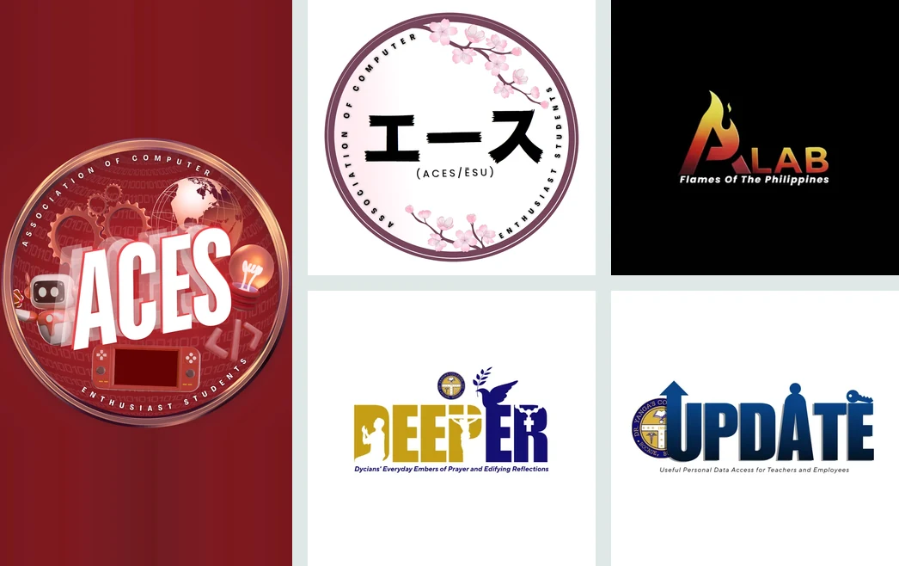
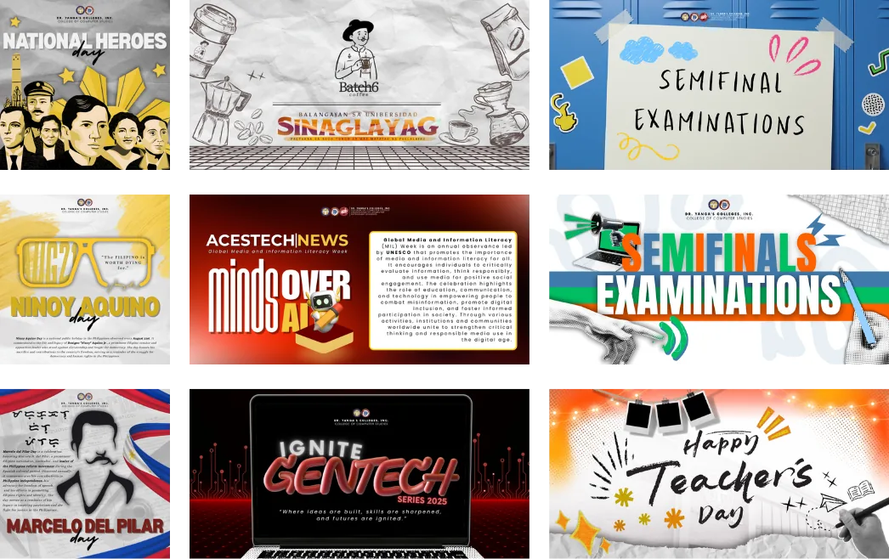
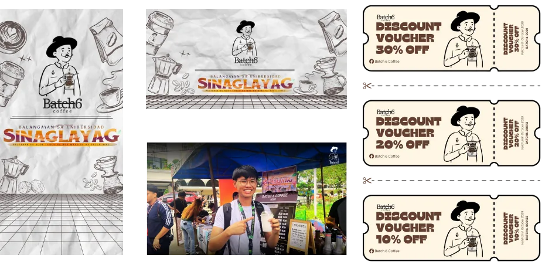
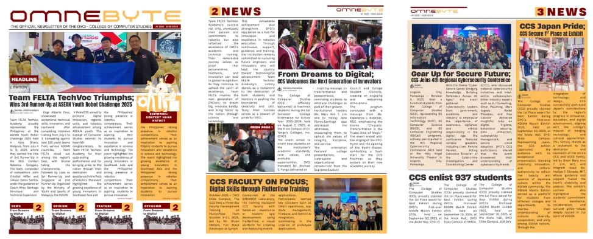
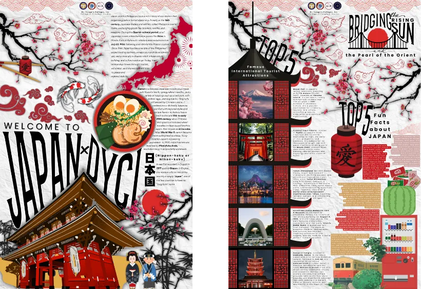
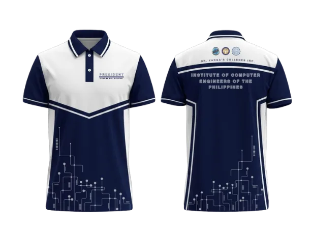
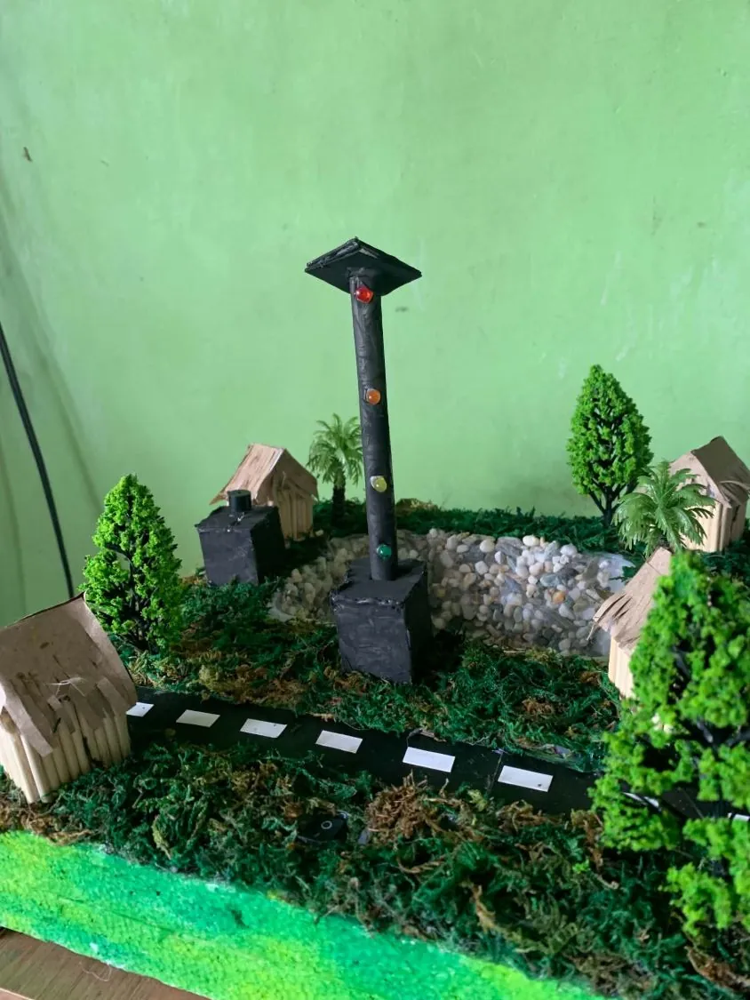
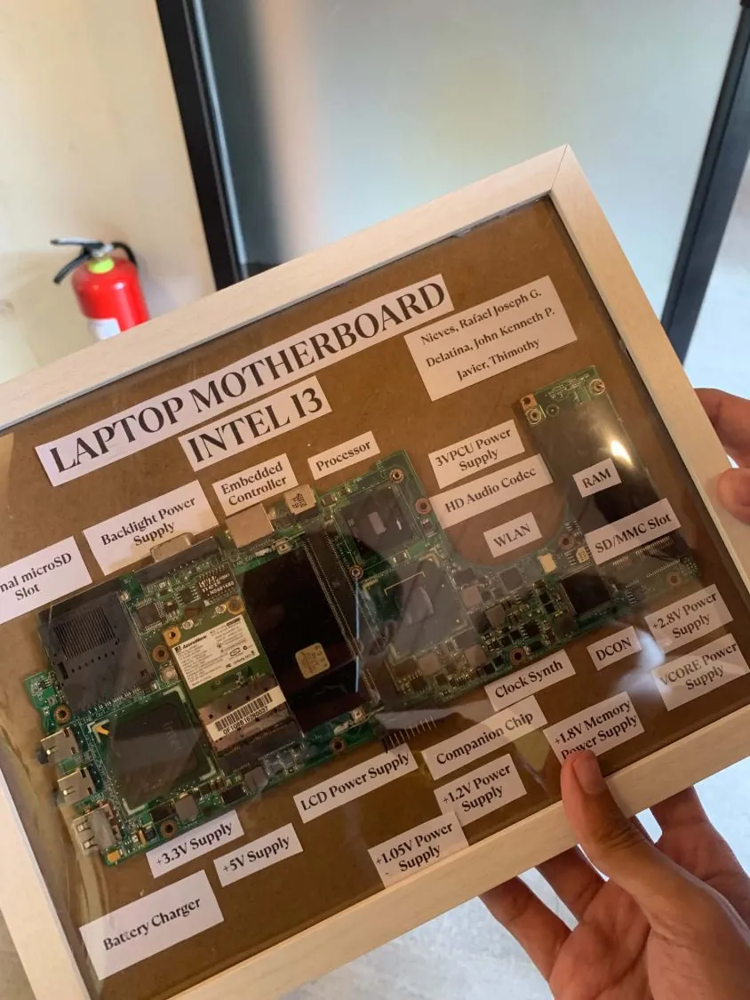
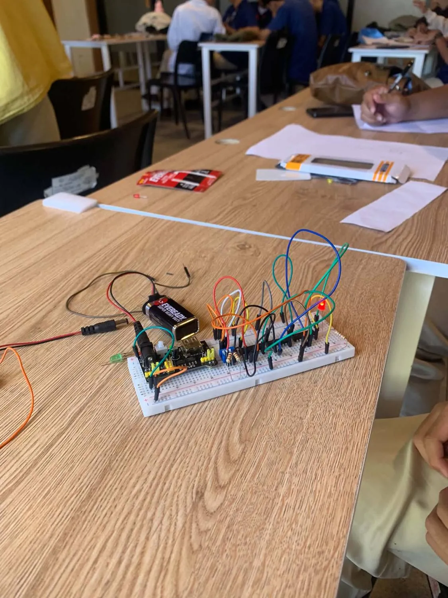

Web app
Whispr
An anonymous confession platform where every account still verifies back to one real person.
View projectWork
Web and design projects for student organizations and community events, plus hands-on Computer Engineering builds. Open any project to see what it is, what I did, and how it was made.
Websites, brand identities, publications and campaign graphics.
Web app
An anonymous confession platform where every account still verifies back to one real person.
View project
Web system
Attendance and clearance for a college of computer studies: students scan their ID at events, earn points and see if they are cleared.
View project
Website
A dark, circuit-board themed site for a college Computer Engineering program, with a 3D hero built in pure CSS and no JavaScript.
View project
Logo & identity
The ACES emblem, an alternate cherry-blossom mark, and logos for student publications.
View project
Social media
Announcements, awareness days, exam reminders and tarpaulins for a college organization.
View project
Campaign
A campaign set for a coffee brand: poster, banner and discount vouchers, used at a live event booth.
View project
Publication
Multi-page newsletter layout for a college of computer studies.
View project
Poster
An information-packed two-page poster on Japan, built around a red, white and black theme.
View project
Apparel
Two sublimation apparel designs: a navy circuit-board polo and a red blackletter basketball jersey.
View projectHardware and electronics builds from my coursework.

Engineering project
A hand-built town scene with an LED traffic light at its centre, made from craft materials.
View project
Engineering project
A framed display of a real laptop motherboard with every major part and power rail labeled.
View project
Engineering project
Hands-on circuit building on breadboard and perforated board for Computer Engineering lab work.
View projectPlayable projects built with HTML5 Canvas.
Tell me about your project and I’ll reply with ideas and next steps.